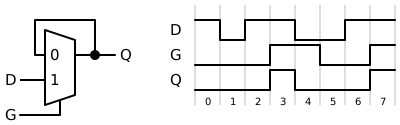
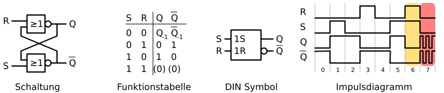
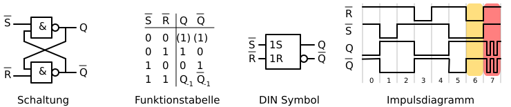
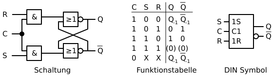
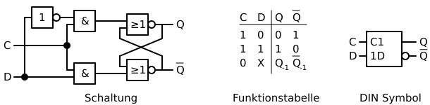
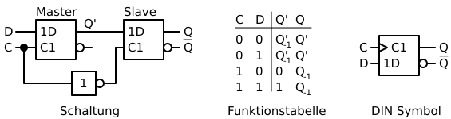
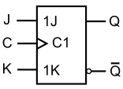
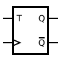
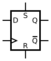

Semiversus | Sequentielle Logik | URL: ../../dic/grundlagen_der_digitaltechnik/sequentielle_logik.html
- Digitale Systeme und Computersysteme
- Grundlagen der Digitaltechnik
- Sequentielle Logik
Allgemeines
Bei der Betrachtung von kombinatorischen Schaltungen geht man von einer Zustandslosigkeit des Schaltnetzes aus. Damit können keine Informationen (über die Schaltungsfunktion selbst hinaus) gespeichert werden. Die sequentielle Logik ist das Teilgebiet der Digitaltechnik, welches sich mit dem Speichern von Information beschäftigt.
Die Ausgänge einer Schaltung mit sequentieller Logik hängen nun also nicht mehr ausschließlich von den Eingängen ab sondern zusätzlich vom Zustand der enthaltenen Speicherelemente.
Speicherelement
Ein Speicherelement kann ein Bit speichern und besitzt zwei stabile Zusände (0 oder 1). Es wird deshalb auch als bistabile Kippstufe bezeichnet. Gewöhnlicherweise wird der Zustand nur gespeichert, solange eine Spannungsversorgung vorhanden ist.
Prinzip der Rückkopplung

Speicherelemente beinhalten immer eine Art von Rückkopplung, um den Zustand speichern zu können. Bei der dargestellten Schaltung wird ein Multiplexer so verschalten, dass ein Eingang direkt mit dem Ausgang verbunden ist. Dadurch ergibt sich folgende Funktionalität:
Transparente Phase
G=1: Der Eingang 1 des Multiplexers, an dem das Signal D anliegt, wird auf den Ausgang ausgegeben. Wenn also G gleich 1 ist folgt das Signal Q dem Signal D.
Halte Phase
G=0: Beim Umschalten des Signals G von 1 auf 0 liegt am Eingang 0 des Multiplexers das Signal Q an. Dieses Signal wird dann am Ausgang des Multiplexers ausgegeben. Es wird also das Signal D zum Umschaltzeitpunkt gehalten.
Pegelgesteuerte Latches
Laut Definition ist ein Latch ein Speicherelement, welches abhängig vom Pegel der Eingänge den Zustand ändert. Anders ist dies beim Flip-Flop, welches per Definition nicht vom Pegel abhängig, sondern von einer Flanke des Taktsignals den neuen Zustand einnimmt. In der Praxis werden die Begriffe Latch und Flip-Flop oft als äquivalente Begriffe verwendet. Um Missverständnisse zu vermeiden wird in diesem Skriptum immer streng zwischen Latch und Flip-Flop unterschieden.
Transparentes RS Latch

Anhand der Schaltung und des Impulsdiagramm können wir die Funktionsweise des RS Latch nachvollziehen. Angenommen wird ein Anfangszustand von %%Q%% gleich 0 und %%\overline{Q}%% gleich 1.
Im Impulsdiagramm sieht man folgenden Signalverlauf:
| Phase |
S |
R |
Bemerkung |
| 0 |
0 |
0 |
Das Latch hält den aktuellen Zustand und ist stabil. |
| 1 |
1 |
0 |
Damit wechselt der Ausgang %%Q%% auf 1 und der Ausgang %%\overline |
| 2 |
0 |
0 |
Das Latch hält den Zustand und ist stabil. |
| 3 |
0 |
1 |
Damit wechselt der Ausgang %%Q%% auf 0 und der Ausgang %%\overline |
| 4 |
0 |
0 |
Das Verhalten entspricht wieder Phase 0. |
| 5 |
1 |
0 |
Der Ausgang %%Q%% wechselt auf 1 und der Ausgang %%\overline |
| 6 |
1 |
1 |
Der Ausgang %%Q%% und %%\overline |
| 7 |
0 |
0 |
Das Verhalten ist nicht definiert. Es kommt zur Metastabilität. |
Aufgrund des Verhaltens können wir folgende Punkte zusammen fassen:
- Ist
R und S auf 0, wird der momentane Zustand behalten.
- Ist
R auf 0 und S auf 1, wird der Ausgang %%Q%% auf 1 und %%\overline{Q}%% auf 0 gesetzt. Deshalb spricht man beim Eingang S vom Set-Eingang.
- Ist
R auf 1 und S auf 0, wird der Ausgang %%Q%% auf 0 und %%\overline{Q}%% auf 1 gesetzt. Deshalb spricht man beim Eingang R vom Reset-Eingang.
- Für die jetzigen Verhalten sind die Ausgänge %%Q%% und %%\overline{Q}%% immer invertiert zu einander, deshalb auch diese Bezeichnung.
- Der Zustand
R und S gleich 1 ist zu vermeiden. Während diesem Zustand ist das Latch zwar stabil, die Ausgänge sind aber nicht mehr invertiert zu einander, sondern beide auf 0.
- Undefiniert wird das Verhalten, wenn beide Eingänge auf 1 sind und gleichzeitig auf 0 wechseln.
Das hier gezeigt RS Latch ist mittels NOR-Gatter aufgebaut, deswegen spricht man auch vom RS-NOR-Latch. Im folgenden sieht man ein RS Latch, welches mittels NAND-Gatter aufgebaut ist. Man spricht dann vom RS-NAND-Latch.

Taktzustandgesteuertes RS Latch
Bei einem taktzustandgesteuertem RS Latch wird ein zusätzlicher Eingang C hinzugefügt. Von diesem Eingang C hängt nun ab, ob das Latch transparent (R und S können den Zustand ändern) oder ob es im Halte Modus betrieben wird. Im Halte Modus können die Eingänge R und S den Zustand nicht ändern, der momentane Zustand wird also gehalten.

Taktzustandgesteuertes D Latch
In der Praxis gibt es viele Anwendungen, in denen ein Bit gespeichert werden soll. Die Schaltung eines taktzustandgesteuerten RS Latch wird also so erweitert, dass ein einzelner Eingang die Funktion von R und S übernimmt.

Hier werden die ursprünglichen Eingänge R und S durch den Eingang D ersetzt. Dieser Eingang hat steuert direkt den ursprünglichen Set-Eingang an und in invertierter Form den ursprünglichen Reset-Eingang. Für den Eingang C gleich 1 gilt: Ist Eingang D gleich 1 wird das RS Latch gesetzt, bei D gleich 0 wird es zurückgesetzt. Ist der Eingang C auf 0 ist das D Latch im Halte Modus.
Flankengetriggerte Flip-Flops
Es gibt viele Anwendungen, die ein Speicherelement benötigen, welches auf eine Taktflanke reagiert. Der transparente Modus ist hier nicht gewünscht.
D Flip-Flop
Um dies zu erreichen werden zwei Latches miteinander kombiniert:

Ist der Eingang C gleich 1, so ist das Master Latch transparent und das Slave Latch im Halte Zustand. Ist der Eingang C gleich 0, hält das Master Latch seinen Zustand und das Slave Latch ist transparent. Wenn C also von 0 auf 1 wechselt, wird der Zustand am Eingang D gespeichert und am Ausgang ausgegeben. Man spricht in diesem Fall von einem Flip-Flop, das auf die positive Flanke des Signals C reagiert. Die Flankentriggerung wird im DIN Symbol mittels einem Dreieck am Eingang symbolisiert.
Als Beispiel für ein Datenblatt dient uns ein 74HC74. Dieser Baustein enthält zwei flankengetriggerte D-Flip-Flops mit asynchronem Reset und Set Eingang (Datenblatt).
RS Flip-Flops
Durch Kombination von zwei Latches in dieser Master-Slave Anordnung lässt sich auch ein RS Flip-Flop konstruieren.
JK Flip-Flops
Bei RS Flip-Flops gilt es nach wie vor den Zustand von gleichzeitig gesetztem R und S zu vermeiden. Durch eine zusätzliche Beschaltung wird ein RS-Flipflop zu einem JK-Flipflop. Für ein JK Flipflop gilt folgende Funktionstabelle:
| J |
K |
%%Q%% |
%%\overline{Q}%% |
Beschreibung |
| 0 |
0 |
%%Q_ |
%%\overline |
Halten |
| 0 |
1 |
0 |
1 |
Zurücksetzen |
| 1 |
0 |
1 |
0 |
Setzen |
| 1 |
1 |
%%\overline |
%%Q_ |
Toggeln |
Hier wird also das gleichzeitige Setzen der Eingänge genutzt, um eine neue Funktion einzuführen: Das Invertieren des aktuellen Zustandes.

T Flip-Flop
Ein T Flip-Flop reagiert auf eine Taktflanke und hat einen Eingang. Der Eingang gibt an, ob der Zustand beibehalten werden soll (T=0) oder ob er wechseln soll (T=1).

Asynchrone Eingänge
Je nach Bauart können auch noch zusätzliche asynchrone Eingänge vorhanden sein. Diese asynchronen Eingänge verändern den Zustand unabhängig vom Taktsignal. So kann ein asynchroner Reset genutzt werden, das Flip-Flop unabhängig vom Takt in einen definierten Zustand zu bringen.
